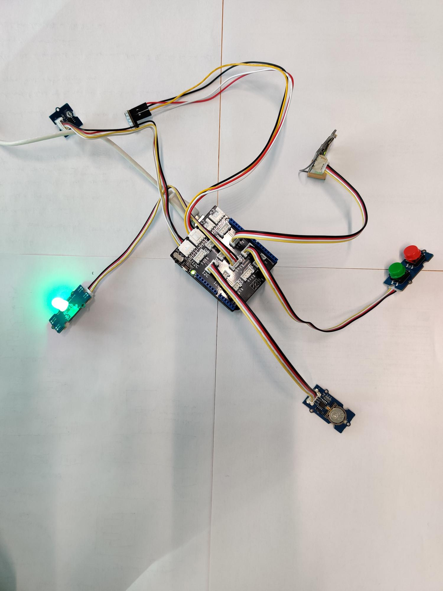

EMBEDDED SYSTEM

During this project, we had various electronic components (sensors, LEDs, buttons), and we had to develop a prototype of a miniature weather station that collects data onto an SD card for analysis.
This weather station was also supposed to have pre-set parameters, such as the number of seconds between two measurements, configuring the internal clock to date the measurements, among other parameters.
Our weather station needed to have several modes with different functionalities, including:
- The standard mode, recognized by the green LED being lit, this mode enables data recording onto the SD card every 10 minutes.
- The configuration mode, recognized by the yellow LED being lit. This mode allows for modifications in the system's configuration.
- he maintenance mode, characterized by the orange LED being lit. In this mode, sensor data is no longer written to the SD card but can still be accessed, and the SD card can be safely removed.
- The economy mode, characterized by the blue LED being lit. In this mode, the number of data acquired is reduced to allow the device to consume less power.